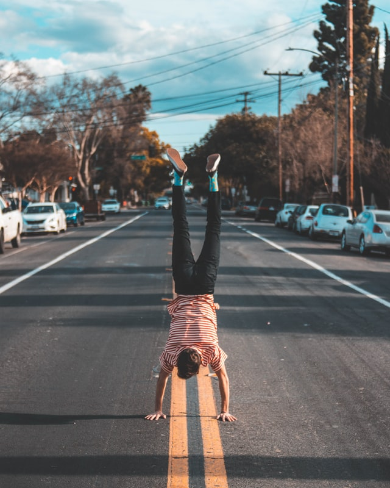

“Nobody can go back and start a new beginning, but anyone can start today and make a new ending.” MARIA ROBINSON
I’ll post a blog article at least one a month. I like experiences where I try doing a specific task for 30 days straight (mediation, exercising … ). The youtuber Matt d’Avella does it as well. I’ll review what brought me those experiences, what are the advantages and downsides of building those habits. On the tech section, I’ll post what projects I’ve been working out and what technologies are used. I’ll write-up about how I learned and implement those tools.
My name is Guilherme, I’m currently studying computer science. During my childhood, I loved to discover how things work and how I could tweak them that’s why I started coding at 14 years old (I create little Minecraft plugins). In high school I started doing more serious stuff and learned python as well as some web scraping libraries (Selenium). As of right now, I want to record my progress on this website in order to look back at what I did of my life in the future.

In addition to what has been stated so far, I also want to make this website a way for people to have an example of one's progress. I want to be the better version of myself and by writing how I am doing may help people or at least tell them what not to do. Furthermore, I also want this blog to be focus on personal development as well as technology. I intend to mark down how I code my projects and how I approach problems. This approach is going to evolve as things progress. Posting blog articles is also a way for me to improve my writing skills